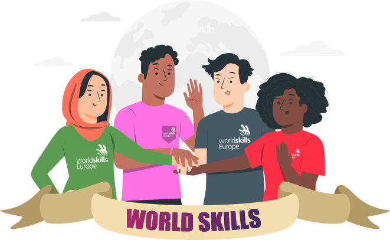

Fins on vols arribar?
Primera fase: Comunitat Valenciana.
El campionat a nivell autonòmic selecciona els millors alumnes de les diferents especialitats de FP.Tenen com a objectiu promocionar els ensenyaments de Formació Professional, estimulant i motivant els alumnes per millorar la qualitat de la seva formació.
Alhora intenta reconèixer i valorar la tasca del professorat.
A més, serveix com a punt de trobada entre empreses, professorat i estudiants.
Fase nacional: Madrid.
Si aconsegueixes ser el millor de la teva comunitat autònoma, tens la possibilitat de preparar-te per competir a les SpainSkills.
Es farà un viatge a Madrid amb els companys de cadascuna de les 27 modalitats.
Durant aquest període es realitzaran les tres jornades de proves de major complexitat.
Els guanyadors d´aquesta competició passaran a formar part de la Selecció Espanyola de FP.

Euroskills.
Aquesta competició és més que la competència europea d'habilitats, és una promoció espectacular de professions per a joves, amb l'objectiu de mostrar i inspirar l'excel·lència a nivell mundial en habilitats i introduir als joves en una varietat de carreres en tota Europa.
L'enfocament principal de *Euroskills és promoure les competicions com a instrument de promoció per a un futur qualificat i innovar en els programes de formació professional per a donar resposta a les necessitats europees de hui.

WorldSkills
És una organització no governamental que vol millorar el perfil i el reconeixement dels titulats d'FP. L'objectiu és mostrar la importància de les diferents habilitats per al creixement econòmic a més de l'èxit personal.
Pretende:
- Promoure l'intercanvi entre joves professionals de diverses regions del món.
- Intercanvi d'habilitats, experiències i innovacions tecnològiques.
- Fer veure als governs i la indústria la importacia de la Formació Professional.
- Sensibilitzar als joves i als qui influeixen en els joves sobre les oportunitats disponibles en les professions qualificades.
